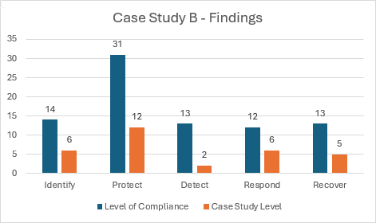

Case Study B
Case Study B is a football clubs competing in the second division of the Scottish Football Pyramid, otherwise known as the Scottish Championship. This case study is the highest ranked football club amongst the four whom agreed to take part in this project, and can be seen as the biggest and most well-known. Because of this, they have access to the most resources amongst the four case studies, which has clearly been reflected in the below figure:

From the above figure, we can clearly see a certain level of compliance with the requisites set forth by the hybrid cybersecurity framework. However, many requisites are still not adhered to despite the increase of readily available resources that can be accessed by the football club. Case Study B only adheres to 37.3% of the requisites - higher than the other case studies, but still nowhere near close to having a complete adherence.
Having access to the most resources amongst the case studies should reflect a higher adherance to the hybrid cybersecurity framework, and it does, however these resources may not be allocated in the apporpriate areas, and so many requisites are left being ignored - improvements must be made to ensure a sound level of cybersecurity hygiene.